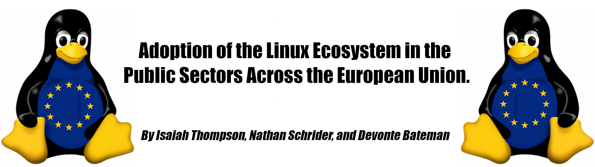

The opportunities that arise within the open-source market is endless, and the long-term benefits that follow, outweigh the added risks and challenges. We live in a world where many digital products and cloud services that are used within the European Union are often more than not, non-EU companies/vendors. This heavy reliance on proprietary software in foreign vender’s hands, threatens the EU’s digital sovereignty, leaving the public sectors vulnerable to ‘vendor lock-in’ (Dirk Schrödte 2026) and even potential operations disruptions. With the adoption of the Linux ecosystem as well as the copious amounts of open-source software that is readily available. The Linux ecosystem offers a more transformative and better alternative for European governments to save funding, obtain their digital sovereignty as well as strengthen their national security. (Dirk Schrödter & Major General Dr. Volker Pötzschaaa 2026).
Today, the government digital systems form part of the nation’s core operational infrastructure. ‘Dirk Schrödter’ who is the Minister for Digitalization in ‘Schleswig-Holstein, Germany’ says “Digital sovereignty is also a matter of national security. Digital systems operating within public administration are no longer just technical tools they have become critical infrastructure. We must be aware: Digital sovereignty is part of state sovereignty”. The reliance on the foreign proprietary software has become overdone and it creates these bad dependencies on just a few global tech corporations which can heavily affect the EU’s policy flexibility and drives costs up.
With the migration of the public IT systems over to open-source software, it delivers a promising financial and economic advantage. ‘Public procurement’ accounts for around 12% of the GDP in ‘OECD’ countries (Iain G. Mitchell 2022). With such a large purchasing power, this allows the European Union to lead in the technology markets and break the vender lock-in. Allowing to build a better and stronger user base for the open-source market. If there were to end the recurring license fees, it would save millions of dollars of taxpayer's money, (Dirk Schrödter 2026). And for example, in Schleswig-Holstien Germany, moving 30,000 public sector workplaces into open-source software would save the state over 15 million euros each year, just in licensing fees alone. Minister Schrödter explains, "Instead of spending our IT funds on licensing fees, we are investing in development and support contracts". Redirecting the public IT budgets back into local tech firms, strengthens the domestic tech ecosystem. With an increase in open-source spending, if around 10% were invested this has the potential to drive up to 0.6% in more additional economic growth, according to the Dirk Schrödter.
The adoption of open-source software can massively transform the public administration from just a passive buyer into a tidy collaborative platform (Ani Matei & Sergiu Ioan Irimia 2014). This also closely aligns with the ‘European Commissions Think Open Strategy’ which is seen promoting software sharing and reuse (Iain G. Mitchell 2022). For example, there is the “Open Document Format” also more commonly referred to as the ODF format which aims to eliminate the file format lock-in. The city of Munich also successfully migrated nearly fifteen thousand desktop PCs to Linux as well as LibreOffice under the “LiMux project” (Mario Silic & Andrea Back 2017), while ‘Schleswig-Holstein’ is also deploying a state-wide workplace, all using open-source software such as LibreOffice, Open-Xchange, Next Cloud and of course, Linux (Dirk Schrödter 2026). With all these together, the real-world deployments prove that open-source migrations are possible and very feasible across the public sectors when they are backed by political leadership (Mario Silic & Andrea Back 2017).
And to conclude this point. Adopting Linux ecosystems across the EU public sectors provides an essential framework for not just safeguarding the EU’s sovereignty but also, it strengthens national security and it turns the public IT budgets into real drivers for economic growth. With the elimination of vendor lock-in the EU’s public sectors, it ensures that their digital infrastructure can not only remain secure but also remain cost effective and fully under their own control (Dirk Schrödter 2026).
Made 19 October 2026